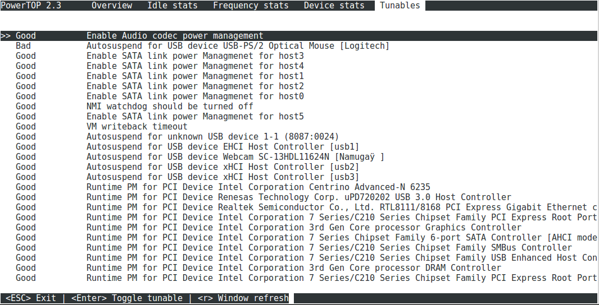
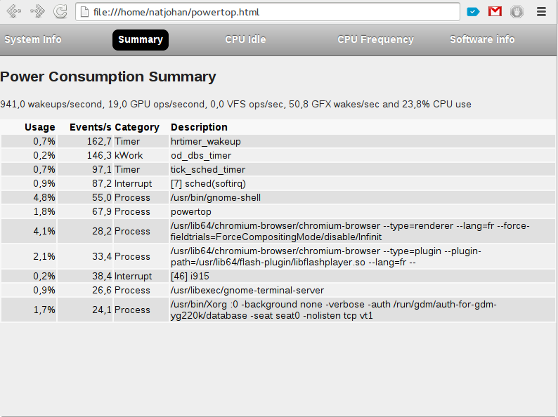

Tip of the week 22
Power management and optimizations with powertop
Powertop is a little utilitie that allow you to reduce your computer power consumption. This is an interesting soft for laptop owner, to install it, simply use you favorite package manager
natjohan# yum install powertop
Now, just launch powertop command with root privileges, the most interesting part is located in tunable tab. With this tab you can activate/deactivate many power tweaks simply by press Enter
you can also generate an html report with powertop --html

Comments